Line one
THE MARKS
The uncounted, painted and numbered and left off the census, and the nine era closers.
 NO. 0783The Open HydrantMark 001
NO. 0783The Open HydrantMark 001 NO. 0788The DeliveristaMark 002
NO. 0788The DeliveristaMark 002 NO. 0795The Graffiti KingMark 003
NO. 0795The Graffiti KingMark 003 NO. 0803The Finance BroMark 004
NO. 0803The Finance BroMark 004 NO. 0817The Crossing GuardMark 005
NO. 0817The Crossing GuardMark 005 NO. 0845The Ferry DeckhandMark 006
NO. 0845The Ferry DeckhandMark 006 NO. 0878The Cyclone OperatorMark 007
NO. 0878The Cyclone OperatorMark 007 NO. 0928The 1972 Subway MapMark 008
NO. 0928The 1972 Subway MapMark 008 NO. 0932The Everything BagelMark 009
NO. 0932The Everything BagelMark 009 NO. 0951The Bridge Cable SpinnerMark 010
NO. 0951The Bridge Cable SpinnerMark 010 NO. 0977The Cricket MatchMark 011
NO. 0977The Cricket MatchMark 011 NO. 1064The Bridge FalconMark 012
NO. 1064The Bridge FalconMark 012 NO. 1092The Pizza BoxMark 013
NO. 1092The Pizza BoxMark 013 NO. 1108The Quarter WaterMark 014
NO. 1108The Quarter WaterMark 014 NO. 1109The Sicilian SliceMark 015
NO. 1109The Sicilian SliceMark 015 NO. 1129The Snow DayMark 016NO. 1160The Floating PoolMark 017
NO. 1129The Snow DayMark 016NO. 1160The Floating PoolMark 017 NO. 1180The Kite FlyerMark 018NO. 1242The Midnight RideMark 019NO. 1282The Horn SymphonyMark 020NO. 1321The Community Garden BeeMark 021NO. 1339The Lost GloveMark 022NO. 1358The Fire Escape ShadowsMark 023NO. 1363The Shearling CoatMark 024NO. 1365The Checkerboard FloorMark 025
NO. 1180The Kite FlyerMark 018NO. 1242The Midnight RideMark 019NO. 1282The Horn SymphonyMark 020NO. 1321The Community Garden BeeMark 021NO. 1339The Lost GloveMark 022NO. 1358The Fire Escape ShadowsMark 023NO. 1363The Shearling CoatMark 024NO. 1365The Checkerboard FloorMark 025 NO. 1381The Public Pool OpeningMark 026
NO. 1381The Public Pool OpeningMark 026 NO. 1389The Last Day of SchoolMark 027NO. 1480The Charm DeliveryMark 028
NO. 1389The Last Day of SchoolMark 027NO. 1480The Charm DeliveryMark 028 NO. 1493The Voice's VacationMark 029NO. 1515The Long ShadowMark 030NO. 1520The Snow Globe DayMark 031
NO. 1493The Voice's VacationMark 029NO. 1515The Long ShadowMark 030NO. 1520The Snow Globe DayMark 031 NO. 1537The Tunnel ChorusMark 032NO. 1620The School TripMark 033NO. 1621The Senior SwimMark 034NO. 1674The Booze CruiseMark 035NO. 1697The First RideMark 036
NO. 1537The Tunnel ChorusMark 032NO. 1620The School TripMark 033NO. 1621The Senior SwimMark 034NO. 1674The Booze CruiseMark 035NO. 1697The First RideMark 036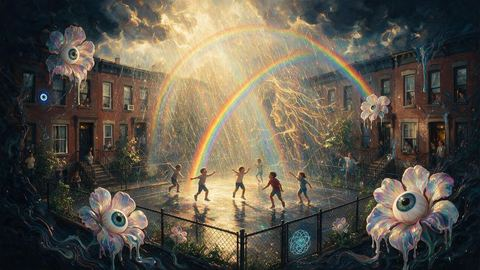
NO. 1707The Sun ShowerMark 037NO. 1736The Fifth BoroughMark 038NO. 1782The Last CheckerMark 039NO. 1842The CarouselMark 040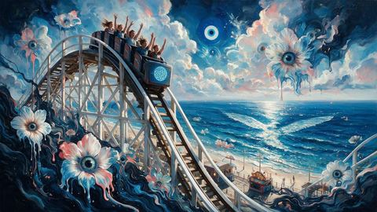
NO. 1855The First DropMark 041NO. 1869The GatesMark 042NO. 1875The Sticky Note WallMark 043NO. 1928The Dominican Day ParadeMark 044NO. 2031The GlassMark 045NO. 2045The SixtiesMark 046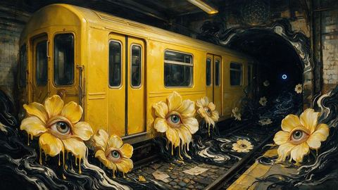
NO. 2084The R TrainMark 047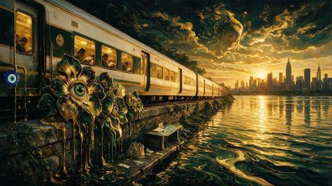
NO. 2090The Metro NorthMark 048NO. 2120The SunMark 049NO. 2146The Pollinators' ParadeMark 050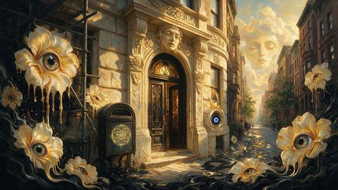
NO. 2154The Scaffolding Comes DownMark 051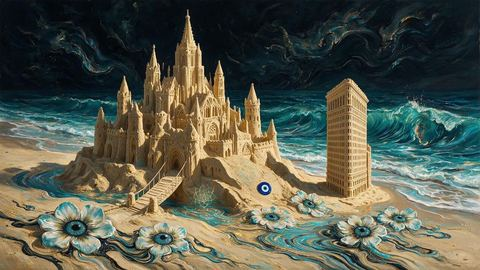
NO. 2189The Sandcastle ContestMark 052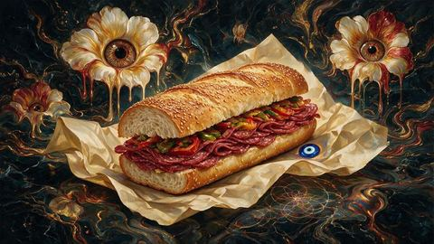
NO. 2226The HeroMark 053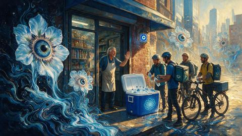
NO. 2289The Delivery OasisMark 054NO. 2305The Five of SlicesMark 055NO. 2317The Three of CoffeesMark 056NO. 2345The Three of ScaffoldsMark 057NO. 2355The Queen of ScaffoldsMark 058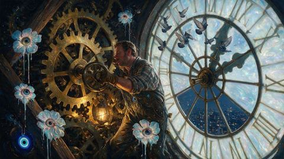
NO. 2377The Clock WinderMark 059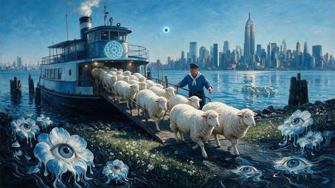
NO. 2390The Island SheepMark 060 NO. 2457Staten Island Board OneMark 061NO. 2466The Halloween Dog ParadeMark 062
NO. 2457Staten Island Board OneMark 061NO. 2466The Halloween Dog ParadeMark 062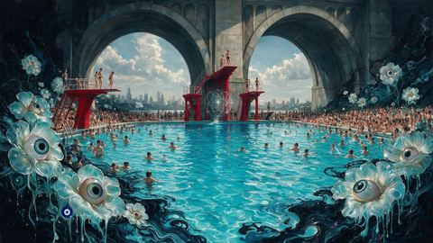
NO. 2605The Astoria PoolMark 063NO. 2652The Receipt ScrollMark 064NO. 2682The Dollar Water KidsMark 065NO. 2719The Cobblestone HourMark 066NO. 2785The Dawn RoosterMark 067NO. 2794The World of TomorrowMark 068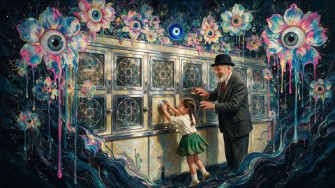
NO. 2802The Five Cent DoorMark 069NO. 2881The Second Cart RibbonMark 070NO. 2922The Sliver of ShadeMark 071NO. 3023The First Drop VendorsMark 072NO. 3050The Monarch TransferMark 073 NO. 3058The Extra StopsMark 074NO. 3137The Car Nobody EntersMark 075NO. 3161The Scooped BagelMark 076NO. 3193The Emptied RoomMark 077NO. 3214The DropMark 078
NO. 3058The Extra StopsMark 074NO. 3137The Car Nobody EntersMark 075NO. 3161The Scooped BagelMark 076NO. 3193The Emptied RoomMark 077NO. 3214The DropMark 078 NO. 3264The Turkey of the BatteryMark 079NO. 3284The Salsa on the PierMark 080NO. 3289The Opening Day PoolMark 081NO. 3292The Kite Over the MeadowMark 082NO. 3296The Sled HillMark 083NO. 3298The Rooftop Shift ChangeMark 084NO. 3389The Pollen WeekMark 085
NO. 3264The Turkey of the BatteryMark 079NO. 3284The Salsa on the PierMark 080NO. 3289The Opening Day PoolMark 081NO. 3292The Kite Over the MeadowMark 082NO. 3296The Sled HillMark 083NO. 3298The Rooftop Shift ChangeMark 084NO. 3389The Pollen WeekMark 085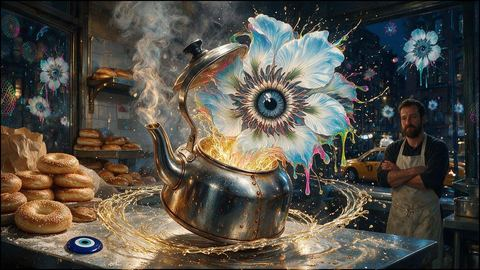
NO. 3539The Bagel Kettle at DawnMark 086NO. 3572The Times Square CountdownMark 087NO. 3632The Palette Mixed the ColourMark 088NO. 3635The Sticker Slap WallMark 089 NO. 3672The Bell of the FerryMark 090NO. 3684The Unboxing That Was EmptyMark 091
NO. 3672The Bell of the FerryMark 090NO. 3684The Unboxing That Was EmptyMark 091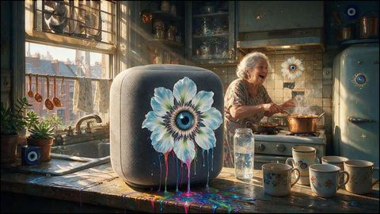
NO. 3701The Model Learned the AccentMark 092NO. 3719The Model Watched the SunsetMark 093NO. 3743The Ledger RewroteMark 094NO. 3748The Bell That Ended TradingMark 095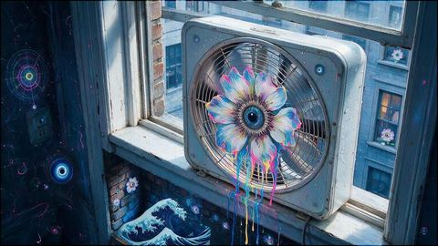
NO. 3768The Window Fan TurnedMark 096NO. 3775The Air Conditioner Held OnMark 097NO. 3807The Whale Came UpMark 098NO. 3822The Sprinkler Head RainbowedMark 099NO. 3834The Rooftop Farm at SunriseMark 100 NO. 3836The Last Bench in WinterMark 101NO. 3853The Bus Depot ClockMark 102
NO. 3836The Last Bench in WinterMark 101NO. 3853The Bus Depot ClockMark 102 NO. 3854The Bridge Toll Booth EmptyMark 103NO. 4003The Subway Clock ConductorMark 104NO. 4039The Understudy's NightMark 105NO. 4184The Debutante's Day JobMark 106
NO. 3854The Bridge Toll Booth EmptyMark 103NO. 4003The Subway Clock ConductorMark 104NO. 4039The Understudy's NightMark 105NO. 4184The Debutante's Day JobMark 106 NO. 4242The Diner at the Edge of OrbitMark 107NO. 4259The Regulars' ReentryMark 108NO. 4286The Forecast BattleMark 109NO. 4354The Unemployment of the Alarm ClocksMark 110NO. 4355The Corner That Grants One Do OverMark 111NO. 4486The Emergency Brake GardenMark 112
NO. 4242The Diner at the Edge of OrbitMark 107NO. 4259The Regulars' ReentryMark 108NO. 4286The Forecast BattleMark 109NO. 4354The Unemployment of the Alarm ClocksMark 110NO. 4355The Corner That Grants One Do OverMark 111NO. 4486The Emergency Brake GardenMark 112 NO. 4597The Debris Netting AuroraMark 113NO. 4667The Cable TunerMark 114
NO. 4597The Debris Netting AuroraMark 113NO. 4667The Cable TunerMark 114 NO. 4706The Channel Marker PoetMark 115
NO. 4706The Channel Marker PoetMark 115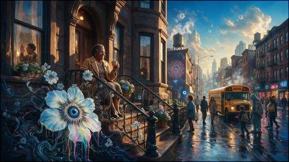
NO. 4765The First Morning of the Deep CityMark 116NO. 4771The Bodega of Two RealitiesMark 117 NO. 4891The Interfaith Block AssociationMark 118
NO. 4891The Interfaith Block AssociationMark 118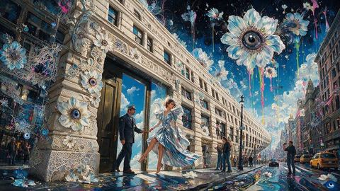
NO. 4918The Flatiron Turns SidewaysMark 119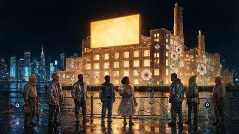
NO. 4926The Ghost RefineryMark 120NO. 4965The Last IllusionMark 121NO. 5050The CrossingMark 122NO. 5074The Hindu Temple That Grows a RoomMark 123NO. 5101The Ice Cream Truck That Knows What Year It Is For YouMark 124NO. 5244The Gondola Over the GowanusMark 125 NO. 5323The Whale in the NarrowsMark 126NO. 5335The Seagull Who Runs the BoardwalkMark 127NO. 5356The Girl Who Talks to the BuildingMark 128
NO. 5323The Whale in the NarrowsMark 126NO. 5335The Seagull Who Runs the BoardwalkMark 127NO. 5356The Girl Who Talks to the BuildingMark 128 NO. 5391The Oldest New YorkerMark 129
NO. 5391The Oldest New YorkerMark 129 NO. 5392The West Indian Day Parade at Full VolumeMark 130
NO. 5392The West Indian Day Parade at Full VolumeMark 130 NO. 5427The Threshold of the Mosque at EidMark 131NO. 5453The Subway Car With Nobody On ItMark 132NO. 5683Kathleen MoranMark 133NO. 5744The Painter Who Works Only in the Blind SpotsMark 134NO. 6181Wei-Lin HwangMark 135NO. 6270Osman SabbaghMark 136NO. 6333Naftali BlumMark 137NO. 6654Adjoa AchebeMark 138NO. 6860Aung MacaraegMark 139NO. 6861Uche OwusuMark 140NO. 6866Kazimierz AdamczykMark 141NO. 6875Kavitha ChakrabortyMark 142NO. 6887Xiuying XuMark 143NO. 6937Milena StanescuMark 144NO. 7333Rukhsana ChakrabortyMark 145NO. 7356Norbu RaiMark 146NO. 7474Shanice BridgesMark 147NO. 7506Marilou WangduMark 148NO. 7515Aaliyah BridgesMark 149NO. 7947Sangay SherpaMark 150
NO. 5427The Threshold of the Mosque at EidMark 131NO. 5453The Subway Car With Nobody On ItMark 132NO. 5683Kathleen MoranMark 133NO. 5744The Painter Who Works Only in the Blind SpotsMark 134NO. 6181Wei-Lin HwangMark 135NO. 6270Osman SabbaghMark 136NO. 6333Naftali BlumMark 137NO. 6654Adjoa AchebeMark 138NO. 6860Aung MacaraegMark 139NO. 6861Uche OwusuMark 140NO. 6866Kazimierz AdamczykMark 141NO. 6875Kavitha ChakrabortyMark 142NO. 6887Xiuying XuMark 143NO. 6937Milena StanescuMark 144NO. 7333Rukhsana ChakrabortyMark 145NO. 7356Norbu RaiMark 146NO. 7474Shanice BridgesMark 147NO. 7506Marilou WangduMark 148NO. 7515Aaliyah BridgesMark 149NO. 7947Sangay SherpaMark 150 NO. 0816The Bodega ChandelierEra closer
NO. 0816The Bodega ChandelierEra closer NO. 0966The OculusEra closer
NO. 0966The OculusEra closer NO. 1166The Met StepsEra closer
NO. 1166The Met StepsEra closer NO. 1466Broad ChannelEra closer
NO. 1466Broad ChannelEra closer NO. 4366The Handoff at the Bodega DoorEra closer
NO. 4366The Handoff at the Bodega DoorEra closer NO. 4766The Door Held OpenEra closer
NO. 4766The Door Held OpenEra closer NO. 6490Renita PrattEra closer
NO. 6490Renita PrattEra closer NO. 6990Rivka HalpernEra closer
NO. 6990Rivka HalpernEra closer NO. 7490Octavio VillanuevaEra closer
NO. 7490Octavio VillanuevaEra closer